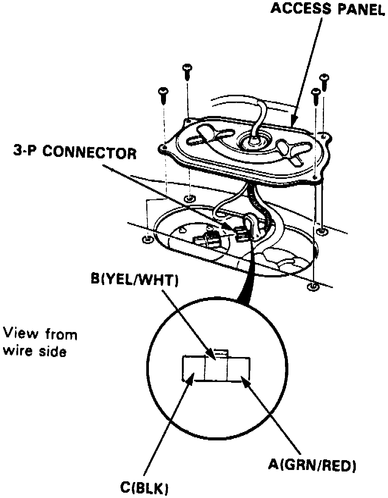

Fuel Gauge: Testing and Inspection
1. Check No. 13 (15A) fuse in underdash fuse/relay box before testing.2. Remove rear seat and access panel.
3. Disconnect 3 pin connector from fuel gauge sending unit.
Fig. 6 Fuel Gauge Sending Unit:

4. Connect voltmeter positive probe to (B) yellow/white terminal and negative probe to (C) black terminal, then turn ignition switch to On position, Fig. 6.
5. Voltage should be 5-8 volts.
6. If voltage is not as specified, check the following:
a. Blown fuse in underdash fuse/relay box.
b. Open in yellow, yellow/white, black or black/white wire 0.
c. Poor ground.
7. Turn ignition switch Off, then attach a jumper wire between terminal (A) yellow/white wire and terminal (B) black/white wire.
8. Turn ignition switch On, then ensure pointer of fuel gauge starts moving toward F mark. Turn ignition switch to Off before pointer reaches F mark on gauge dial. Failure to do so may damage fuel gauge.
9. If pointer of fuel gauge does not swing, replace gauge.
10. If gauge is satisfactory, inspect fuel gauge and sending unit.